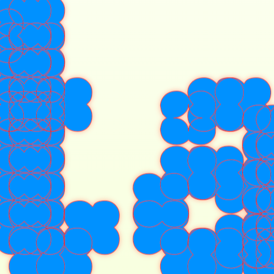
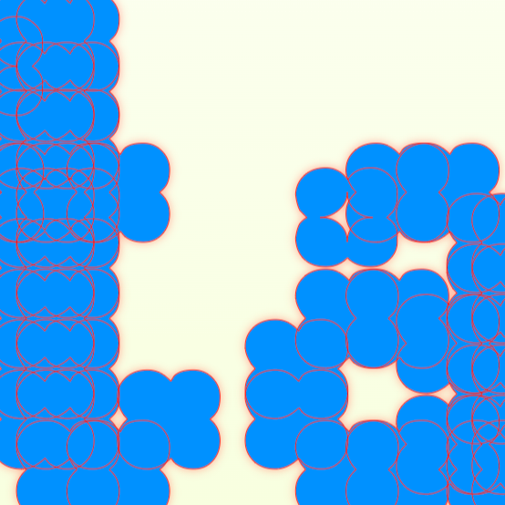

stardew is a pixel-based, grid-based, variable display serif designed by Drithi Kandoor.
The typeface was born from a curiosity about combining traditional design with technology, aiming to create an interplay between pixel and serif typography. Interested in how a grid and symbol could reimagine the nature of serifs, Stardew uses a flower-like pixel () to form its characters. The placement and varying repetition of this symbol on a grid reinforce the stress of serif typefaces. A different variation of the pixel () is used for the serifs, dots, and other aspects, creating a playful distinction. The serifs are also tapered, and the letters have a slightly tilted axis, resembling old-style serifs.
it comes with different
weights,
as well as different
widths.
After multiple rounds of hand-sketching possible symbols, grids, and serif characters...
the characters were brought to life using Glyphs!
then, the extremes of width & weight were made to turn stardew into a variable typeface.
*still in progress – more to come.
 

.............................
for more information, contact drithi.rajesh@gmail.com